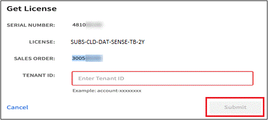

Solicitar cambios en el documento
Solicitar cambios en el documento Editar en GitHub
Editar en GitHub Guía del colaborador
Guía del colaboradorConfigure las licencias para Cloud Tiering
Colaboradores
Una prueba gratuita de 30 días de Cloud Tiering se inicia cuando se configura la organización en niveles desde su primer clúster. Cuando finalice la prueba gratuita, tendrá que pagar por Cloud Tiering mediante un pago por uso o una suscripción anual al mercado de su proveedor de cloud, una licencia de BYOL de NetApp o una combinación de ambos.
Antes de leer más:
-
Si ya está suscrito al mercado de su proveedor de cloud a la suscripción de BlueXP (PAYGO), entonces también está suscrito automáticamente a Cloud Tiering desde sistemas ONTAP en las instalaciones. Verá una suscripción activa en la pestaña Cloud Tiering Licensing. No tendrá que volver a suscribirse.
-
La licencia de almacenamiento por niveles en cloud BYOL es una licencia flotante que puede utilizar en varios clústeres de ONTAP en las instalaciones de su cuenta de BlueXP. Esto es distinto del pasado en el que se ha adquirido una licencia de FabricPool para cada clúster.
-
Los datos se ofrecen en niveles en StorageGRID sin ningún coste, por lo que no es necesario ni una licencia BYOL ni un registro PAYGO. Estos datos organizados en niveles no cuentan con la capacidad adquirida en su licencia.
Utilice una suscripción a Cloud Tiering PAYGO
Las suscripciones de pago por uso que se generan en el mercado de su proveedor de cloud le permiten utilizar sistemas Cloud Volumes ONTAP y muchos servicios de datos en el cloud, como Cloud Tiering.
Suscribirse desde AWS Marketplace
Suscríbase a Cloud Tiering desde AWS Marketplace para configurar una suscripción de pago por uso para organizar los datos en niveles desde clústeres de ONTAP a AWS S3.
-
En BlueXP, haga clic en movilidad > organización en niveles > licencias.
-
Haga clic en Suscribirse en AWS Marketplace y a continuación, haga clic en continuar.
-
Suscríbase en el "Mercado AWS", Y a continuación, vuelva a iniciar sesión en el sitio Web de BlueXP para completar el registro.
El siguiente vídeo muestra el proceso:
Suscribirse desde Azure Marketplace
Suscríbase a Cloud Tiering desde Azure Marketplace para configurar una suscripción de pago por uso para organizar los datos en niveles desde clústeres de ONTAP al almacenamiento de Azure Blob.
-
En BlueXP, haga clic en movilidad > organización en niveles > licencias.
-
Haga clic en Suscribirse en Azure Marketplace y a continuación, haga clic en continuar.
-
Suscríbase en el "Azure Marketplace", Y a continuación, vuelva a iniciar sesión en el sitio Web de BlueXP para completar el registro.
El siguiente vídeo muestra el proceso:
Suscribirse desde el mercado de GCP
Suscríbase a Cloud Tiering desde GCP Marketplace para establecer una suscripción de pago por uso para organizar los datos en niveles desde clústeres de ONTAP hasta el almacenamiento Google Cloud.
-
En BlueXP, haga clic en movilidad > organización en niveles > licencias.
-
Haga clic en Suscribirse en GCP Marketplace y a continuación, haga clic en continuar.
-
Suscríbase en el "Mercado para GCP", Y a continuación, vuelva a iniciar sesión en el sitio Web de BlueXP para completar el registro.
El siguiente vídeo muestra el proceso:
Utilizar un contrato anual
Pague por el almacenamiento en niveles en el cloud anualmente al comprar un contrato anual.
Al organizar en niveles los datos inactivos en AWS, puede suscribirse a un contrato anual que esté disponible en "AWS Marketplace". Está disponible en periodos de 1, 2 o 3 años.
Si desea utilizar esta opción, configure su suscripción desde la página Marketplace y, a continuación, configure "Asocie la suscripción con sus credenciales de AWS".
Actualmente, no se admiten contratos anuales si la organización en niveles se realiza en Azure o GCP.
Usar una licencia BYOL de Cloud Tiering
Las licencias que traiga sus propias de NetApp proporcionan períodos de 1, 2 o 3 años. La licencia BYOL Cloud Tiering es una licencia floating que puede utilizar en varios clústeres de ONTAP en las instalaciones de su cuenta de BlueXP. La capacidad total de organización en niveles definida en su licencia de Cloud Tiering se comparte entre todos de sus clústeres en las instalaciones, lo que facilita la renovación y la licencia iniciales.
Si no dispone de una licencia de Cloud Tiering, póngase en contacto con nosotros para adquirir una:
-
Mailto:ng-cloud-tiering@netapp.com?Subject=Licensing[Enviar correo electrónico para adquirir una licencia].
-
Haga clic en el icono de chat situado en la parte inferior derecha de BlueXP para solicitar una licencia.
Opcionalmente, si tiene una licencia basada en nodo sin asignar para Cloud Volumes ONTAP que no usará, puede convertirla en una licencia de Cloud Tiering con la misma equivalencia en dólares y la misma fecha de caducidad. "Vaya aquí para obtener más información".
La página de Digital Wallet de BlueXP se utiliza para gestionar las licencias BYOL de Cloud Tiering. Puede añadir licencias nuevas y actualizar las licencias existentes.
Nuevas licencias BYOL para Cloud Tiering a partir del 21 de agosto de 2021
La nueva licencia Cloud Tiering se introdujo en agosto de 2021 para configuraciones de organización en niveles compatibles con BlueXP mediante el servicio Cloud Tiering. Actualmente, BlueXP admite la organización en niveles en el siguiente almacenamiento en cloud: Amazon S3, almacenamiento blob de Azure, Google Cloud Storage, almacenamiento de objetos compatible con S3 y StorageGRID.
La licencia FabricPool que puede haber utilizado en el pasado para organizar los datos de ONTAP en las instalaciones en el cloud se conserva sólo para implementaciones de ONTAP en sitios que no tienen acceso a Internet (también conocidos como "sitios oscuros") y para configuraciones de organización en niveles en IBM Cloud Object Storage. Si utiliza este tipo de configuración, instalará una licencia de FabricPool en cada clúster mediante System Manager o la CLI de ONTAP.

|
Tenga en cuenta que organizar en niveles en StorageGRID no requiere una licencia de FabricPool o Cloud Tiering. |
Si utiliza actualmente la licencia de FabricPool, no se verá afectado hasta que la licencia de FabricPool alcance su fecha de vencimiento o la capacidad máxima. Póngase en contacto con NetApp cuando necesite actualizar su licencia o con versiones anteriores para asegurarse de que no se interrumpa su capacidad para organizar los datos en niveles en el cloud.
-
Si utiliza una configuración compatible con BlueXP, sus licencias de FabricPool se convertirán en licencias de Cloud Tiering y aparecerán en la cartera digital. Cuando esas licencias iniciales expiren, tendrá que actualizar las licencias de Cloud Tiering.
-
Si está utilizando una configuración que no es compatible con BlueXP, continuará utilizando una licencia de FabricPool. "Vea cómo se lleva a cabo la organización en niveles de licencias con System Manager".
A continuación, se indican algunas cosas que debe saber sobre las dos licencias:
| Licencia de Cloud Tiering | Licencia de FabricPool |
|---|---|
Se trata de una licencia flotante que se puede utilizar en varios clústeres ONTAP de las instalaciones. |
Se trata de una licencia por clúster que adquiere y licencia para every cluster. |
Está registrado en BlueXP en la cartera digital. |
Se aplica a clústeres individuales mediante System Manager o la CLI de ONTAP. |
La configuración y gestión de niveles se llevan a cabo a través del servicio Cloud Tiering en BlueXP. |
La configuración y la gestión por niveles se realizan mediante System Manager o la interfaz de línea de comandos de ONTAP. |
Una vez configurado, puede utilizar el servicio de organización en niveles sin una licencia durante 30 días con la prueba gratuita. |
Una vez configurado, puede organizar los primeros 10 TB de datos de forma gratuita. |
Obtenga su archivo de licencia de Cloud Tiering
Después de adquirir la licencia de Cloud Tiering, activa la licencia en BlueXP introduciendo el número de serie de Cloud Tiering y la cuenta de NSS, o cargando el archivo de licencia de NLF. Los pasos a continuación muestran cómo obtener el archivo de licencia de NLF si planea utilizar ese método.
-
Inicie sesión en la "Sitio de soporte de NetApp" Y haga clic en sistemas > licencias de software.
-
Introduzca el número de serie de la licencia de Cloud Tiering.

-
En clave de licencia, haga clic en obtener archivo de licencia de NetApp.
-
Introduzca su ID de cuenta de BlueXP (esto se denomina ID de inquilino en el sitio de soporte) y haga clic en Enviar para descargar el archivo de licencia.

Puede encontrar su ID de cuenta de BlueXP seleccionando el menú desplegable cuenta de la parte superior de BlueXP y, a continuación, haciendo clic en Administrar cuenta junto a su cuenta. Su ID de cuenta se encuentra en la ficha Descripción general.
Añada licencias BYOL de Cloud Tiering a su cuenta
Después de adquirir una licencia de Cloud Tiering para su cuenta de BlueXP, debe agregar la licencia a BlueXP para utilizar el servicio Cloud Tiering.
-
Haga clic en todos los servicios > cartera digital > licencias de servicios de datos.
-
Haga clic en Agregar licencia.
-
En el cuadro de diálogo Add License, introduzca la información de la licencia y haga clic en Add License:
-
Si tiene el número de serie de la licencia de organización en niveles y conoce su cuenta de NSS, seleccione la opción introducir número de serie e introduzca esa información.
Si su cuenta del sitio de soporte de NetApp no está disponible en la lista desplegable, "Agregue la cuenta NSS a BlueXP".
-
Si tiene el archivo de licencia de organización en niveles, seleccione la opción cargar archivo de licencia y siga las indicaciones para adjuntar el archivo.

-
BlueXP añade la licencia para que su servicio Cloud Tiering esté activo.
Actualizar una licencia BYOL de Cloud Tiering
Si el término con licencia se acerca a la fecha de vencimiento o si la capacidad con licencia ha alcanzado el límite, se le notificará en Cloud Tiering.

Este estado también aparece en la página cartera digital.

Puede actualizar su licencia de Cloud Tiering antes de que caduque, para que no se interrumpa su capacidad para organizar los datos en niveles en el cloud.
-
Haga clic en el icono de chat situado en la parte inferior derecha de BlueXP para solicitar una extensión de su término o capacidad adicional a su licencia de Cloud Tiering para el número de serie concreto.
Tras pagar la licencia y registrarse en el sitio de soporte de NetApp, BlueXP actualiza automáticamente la licencia en la cartera digital y la página licencias de servicios de datos reflejarán el cambio en 5 a 10 minutos.
-
Si BlueXP no puede actualizar automáticamente la licencia, deberá cargar manualmente el archivo de licencia.
-
Puede hacerlo Obtenga el archivo de licencia del sitio de soporte de NetApp.
-
En la página cartera digital de la ficha Data Services Licenses, haga clic en
 Para el número de serie del servicio que está actualizando y haga clic en Actualizar licencia.
Para el número de serie del servicio que está actualizando y haga clic en Actualizar licencia.
-
En la página Update License, cargue el archivo de licencia y haga clic en Actualizar licencia.
-
BlueXP actualiza la licencia para que su servicio Cloud Tiering siga activo.
Aplique licencias de Cloud Tiering en los clústeres que se encuentran en configuraciones especiales
Los clústeres de ONTAP en las siguientes configuraciones pueden usar licencias de organización en niveles de cloud, pero la licencia debe aplicarse de una forma diferente a la de los clústeres de un solo nodo, clústeres configurados de alta disponibilidad, clústeres en configuraciones de segmentación en mirroring y configuraciones de MetroCluster con FabricPool Mirror:
-
Clústeres organizados en niveles en IBM Cloud Object Storage
-
Cluster que se instala en "sitios oscuros"
Procese los clústeres existentes que tienen una licencia de FabricPool
Cuando usted "Descubra cualquiera de estos tipos especiales de clústeres en Cloud Tiering", Cloud Tiering reconoce la licencia de FabricPool y añade la licencia a la cartera digital. Esos clústeres seguirán organizando en niveles los datos de la manera habitual. Cuando caduque la licencia de FabricPool, necesitará adquirir una licencia de Cloud Tiering.
Proceso para los clústeres recién creados
Cuando descubra clústeres típicos en Cloud Tiering, configurará la organización en niveles mediante la interfaz de Cloud Tiering. En estos casos, se realizan las siguientes acciones:
-
La licencia «principal» Cloud Tiering realiza un seguimiento de la capacidad que utilizan todos los clústeres para organizar en niveles con el fin de garantizar que la licencia contiene la capacidad suficiente. La capacidad total de la licencia y la fecha de vencimiento se muestran en la cartera digital.
-
Se instala automáticamente una licencia de organización en niveles "secundaria" en cada clúster para comunicarse con la licencia "principal".

|
La capacidad con licencia y la fecha de vencimiento que se muestran en System Manager o en la interfaz de línea de comandos de ONTAP para la licencia "secundaria" no son la información real, por lo que no debe preocuparse si la información no es la misma. Este valor se gestiona internamente mediante el software Cloud Tiering. La información real se registra en la cartera digital. |
Para las dos configuraciones enumeradas anteriormente, necesitará configurar la organización en niveles mediante System Manager o la interfaz de línea de comandos de ONTAP (no mediante la interfaz de organización en niveles en el cloud). En estos casos, deberás insertar manualmente la licencia "secundaria" en estos clústeres desde la interfaz de Cloud Tiering.
Tenga en cuenta que, dado que los datos se organizan en niveles en dos ubicaciones de almacenamiento de objetos diferentes para las configuraciones de segmentación de almacenamiento, deberá adquirir una licencia con capacidad suficiente para organizar los datos en niveles en ambas ubicaciones.
-
Instale y configure los clústeres de ONTAP mediante System Manager o la interfaz de línea de comandos de ONTAP.
No configure la organización en niveles en este momento.
-
"Adquiera una licencia de Cloud Tiering" para la capacidad que se necesita para el nuevo clúster o los clústeres.
-
En BlueXP, "Añada la licencia a la cartera digital".
-
En organización en niveles del cloud, "detectar los clústeres nuevos".
-
En Cluster Dashboard de, haga clic en
Para el clúster y seleccione desplegar licencia.
-
En el cuadro de diálogo Deploy License, haga clic en Deploy.
La licencia secundaria se pone en marcha en el clúster de ONTAP.
-
Volver a System Manager o a la interfaz de línea de comandos de ONTAP y configurar la configuración de organización en niveles.